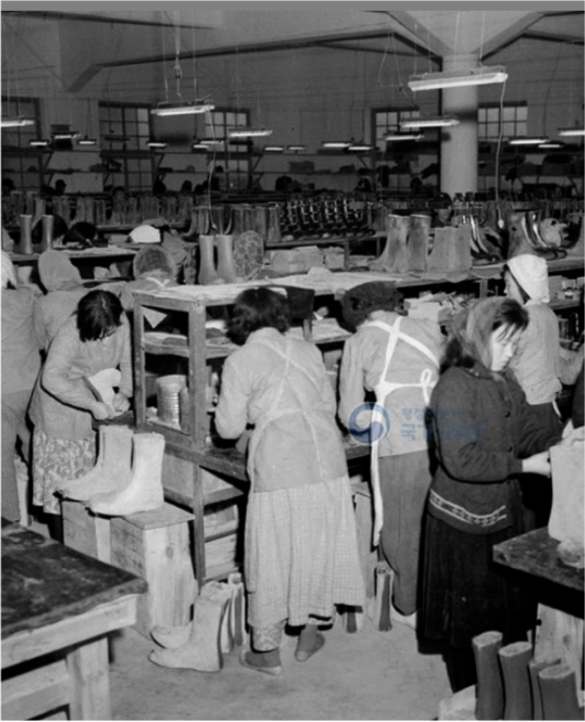
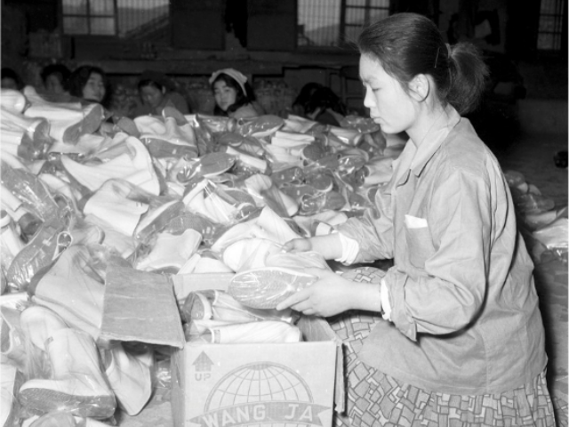
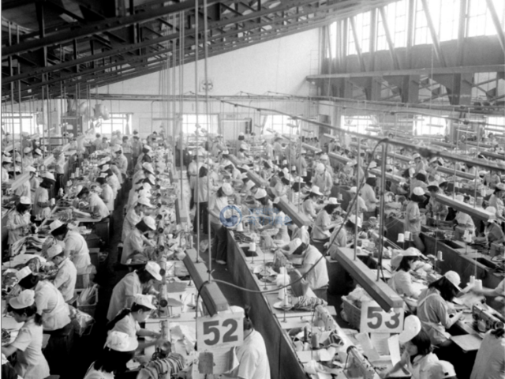
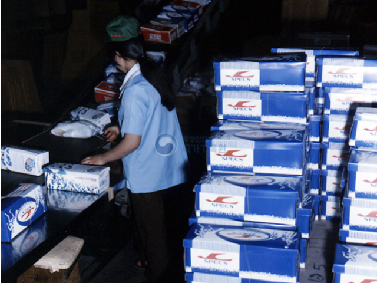
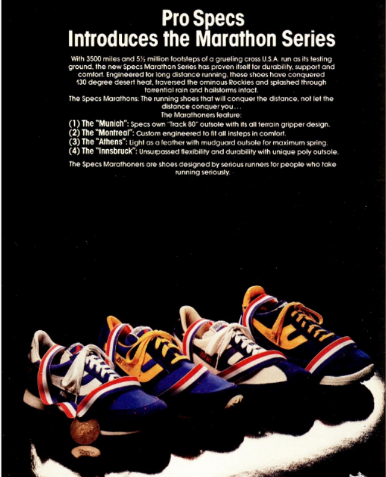
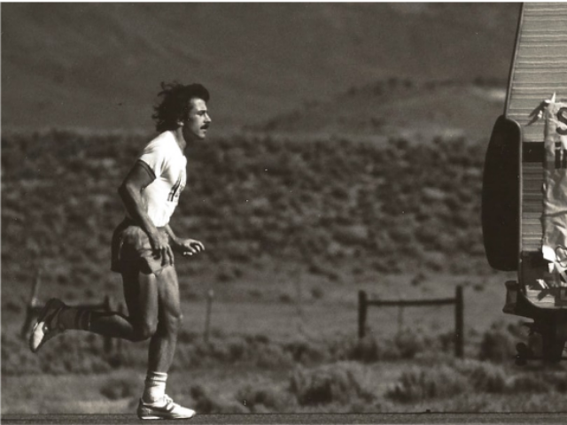
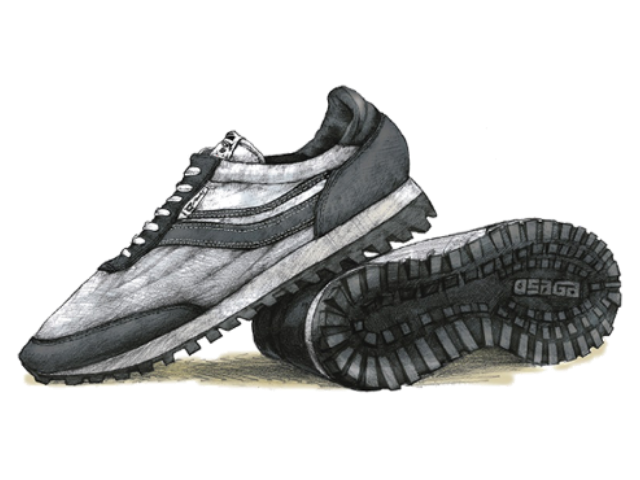

브랜드의 창업주이자 훗날 한국을 대표하는 사업가가 된 양정모는 아버지 양태진의 범일동 정미소에 큰 불이 나자 1948년 4월 그 터의 한구석에 고무신 공장을 짓고 국제고무공업사라 이름 붙였습니다. 이곳에서 만들어진 최초의 신발은 남성용 적대,흑대 고무신으로 창업 첫날 생산량은 157족에 불과했습니다. 이듬해 12월 21일 자본금 1천만원에 국제화학주식회사라는 이름으로 등기하였습니다.
“신용을 얼굴 삼아 돈도 벌어야 한다“
불량품은 한 켤레도 시장에 내놓지 않는다는 창업주의 굳은 신념이 담긴 고무신을 사기 위해 범일동 공장에는 아침부터 긴 줄이 늘어섰습니다.
우리는 고무신 하나에도 위계를 두었고 1등급에 해당되는 제품에만 왕자 상표를 부착했습니다. 전국적인 명성을 얻게 된 왕자 고무신은 1950년 3월 24일 상표 출원되었습니다.

1961
신발 생산업체로의 도약
1953년과 1960년 두 번의 큰 화재로 회사는 엄청난 피해를 입었지만, 양정모는 대량 증자를 통해 위기를 돌파했습니다. 이 시기 꾸준히 도입한 기계화된 생산 기술에 힘입어 공장은 현대화를 이루었고 1961년 일 평균 생산량은 31,000족에 이르렀습니다. 해방 후 부산에 난립한 70개 고무신 공장 중 하나에 불과했던 국제화학 주식회사가 국내 최대 신발 생산 업체로 올라서는 순간이었습니다.

1962
2,424족의 농구화
1962년 9월 국내 최초로 미국에 농구화 2,424족을 수출하였습니다. 처녀수출 기념식을 갖고 격려하며 자축하는 분위기 속에서도 한편으론 바이어의 반응을 살폈습니다. 얼마 지나지 않아 들려온 12월의 43,392족의 추가 오더는 우리 신발에 대해 세계 시장이 들려준 첫 응답이었습니다.

1969
세계 최대규모의 사상공장
1969년 3월 1일 22만 8099.17㎡[6만 9000평]에 이르는 대규모 사상 공장을 신축하여 본격적인 수출 작업에 매진합니다. 사상 공장은 일 평균 164,500족을 생산하는 단일 규모로는 세계 최대규모의 생산시설이었습니다.
1975Symbol of Excellence
1975년 7월 10일 20세기 amazon이라고 불리는 미국 최대의 소매업체 Sears로 부터 Symbol of Excellence상을 받았습니다. 이 상은 2만여개의 Sears 납품사 중 우수한 품질의 업체에게 주어지는 것으로 신발류로는 세계 최초의 수상이었습니다. 우리는 같은 해 10월 30일 품질관리우수 국무총리상을 수상하였고 삼성, 대우, 한일합섬에 이어 국내 4번째 종합상사로 지정됩니다. 이듬해 사명을 국제상사로 변경합니다.

1976
스펙스 SPECS
최고 수준의 품질을 인정 받은 우리는 점점 더 많은 세계적 브랜드들로부터 주문을 받게 되었습니다. 이 시기 우리는 Adidas, Dunlop, Pony, Superga 등과 일했습니다. 1975년 4월 미국 매사추세츠주에서 설립된 스펙스 브랜드의 신발을 처음 만들기 시작한 것은 1976년이었습니다.

1978
프로스펙스 PROSPECS
1978년 우리는 스펙스 브랜드를 소유한 미국의 SPECS INTERNATIONAL을 인수하고 PERFORMANCE ATHLETIC SHOES로 스펙스의 정체성을 재정의합니다. 프로페셔널 선수를 위한 브랜드 프로스펙스 PRO-SPECS는 이렇게 탄생하였습니다.

1978Run across America
1978년 미국의 마라토너 데이브 맥길리브레이 McGillivray는 Jimmy Fund와 Dana-Farber Cancer Institute를 위한 기금마련을 위해 오리건 주 에서 고향인 매사추세츠 주 까지 미국을 가로질러 달렸습니다. 80일 동안 그는 하루 평균 42마일을 달리며 총 3,452마일을 이동합니다. 프로스펙스의 마라톤220 신발이 그의 길고도 의미 있는 여정을 도왔습니다.

1980Runner's World 5 STAR 획득
신발 기술 발전에 큰 공헌을 했다고 평가 받는 세계적 권위의 Runner’s World지로 부터 5 STAR 등급을 받기 위해 국제상사 제 5사업부 기술팀은 79년 2월 부터 5월 까지 런닝화의 경량화 및 고탄력화를 가능케 할 LARA SPONGE (Light And Resilient Ace SPONGE)개발에 착수하였고 이를 적용한 프로-스펙스 INNSBRUCK이 1980년 Men’s Training Flat 부문에서 5스타를 획득하였습니다.
우리는 프로스펙스 이전에도 미국 오사가 OSAGA 브랜드의 런닝화 개발을 통해 한국산 신발 최초로 5스타 등급을 받은 경험이 있었습니다.
프로스펙스 중단없는 도전
1981
프로스펙스 런칭
미국에서의 몇 년 간의 준비기를 거쳐 1981년 11월 16일 롯데쇼핑센터에 프로스펙스 1호점을 선보였습니다. 서양인의 발 모양에 근거하여 만들어진 신발 때문에 때로는 불편을 무릅쓰고 경기해야 했던 선수들이 발에 잘 맞는 우리 상표를 신고 뛰며 보다 더 좋은 성과를 만들어낼 수 있게 되었습니다.
1982
프로스포츠 출범
1982년 프로야구의 출범으로 국내에도 본격적인 프로스포츠 시대가 시작됩니다. 우리는 프로원년 해태타이거즈와 MBC 청룡, 롯데자이언츠 용품 스폰서를 시작으로 1984년 출범한 프로축구에서도 럭키금성의 첫 슈퍼리그 우승 당시 킷 스폰서를 맡는 등 적극적으로 프로스포츠에 참여했습니다.
프로스펙스의 역사는 대한민국 프로스포츠의 발전사와 궤를 같이 합니다.
1983
스포츠제품과학연구센터
1982년 뉴델리 아시안게임에서의 경험을 발판 삼아 더욱 전문적인 프로 규격의 신발을 만들어야겠다고 다짐하게 되었습니다. 우리는 전문 인력을 둔 스포츠제품과학연구센터를 만들고 국내 유일의 전자 발계측기와 피터스코프 등 특수기기를 설치하였습니다. 이러한 노력은 이듬해 6월 국내 최초의 직접 사출방식으로 제조된 그랜드슬램의 개발로 이어집니다.
1984
한국 농구 유일의 올림픽 메달
1984 LA 올림픽 여자농구 4강전 중국과의 경기. 박찬숙, 성정아 등 대표팀 선수들은 프로스펙스의 유니폼, 농구화와 함께 은메달을 확정 지으며 한국 농구사에 가장 기념비적인 순간을 만들었습니다.
프로스펙스는 1984 LA 올림픽 부터 2020 도쿄 올림픽 까지 열 번의 올림픽 대회에 다양한 종목의 국내외 대표팀 후원을 통해 꾸준히 참가하고 있습니다.
1984
국제센터빌딩 (LS용산타워)
1984년 10월 국제그룹의 사옥으로 당시로는 생소한 전관 태양열 이용 시스템과 최신의 자동제어 시스템을 갖춘 연면적 10만㎡가 넘는 대형빌딩을 세웠습니다. 우리는 오늘까지도 이 곳에서 일하고 있습니다.
1986
디펜딩 챔피언에 도전
1986년 32년 만에 월드컵 본선 진출에 성공한 국가대표 축구팀은
82년 대회 우승팀인 이탈리아를 맞아 명승부를 벌였습니다.
0:1로 뒤지던 후반 17분 모든 카메라가 최순호의 발을 비췄습니다. 믿기 힘든 동점골이 터졌습니다. 이 골은 지금까지도 월드컵 역사에 기억할만한 아름다운 골로 회자됩니다.
1988
올림픽 공식 스포츠화
1985년 2월 국제그룹 해체 사건을 겪게 됐지만 우리의 전진은 멈추지 않았습니다. 프로스펙스는 프랑스, 이탈리아, 핀란드 회사와 판매 로열티 계약을 맺었고 86 아시안게임과 88 서울올림픽의 신발 공식 후원업체에 선정되었습니다. 서울 올림픽에서 국가 대표팀이 따낸 12개의 금메달은 맨발 운동인 유도를 제외하면 모두 프로스펙스 신발과 함께 이뤄낸 것이기도 합니다.
1992
허물어진 관습의 벽
서태지와 아이들의 등장은 90년대를 나누는 시대적 이정표가 됩니다. 그 파격적이었던 음악은 물론 Tag을 떼지 않고 제품을 착용하는 방식으로 대표되는 패션도 크게 화제가 되었습니다. 서태지가 반바지에 매치하던 프로스펙스의 농구화와 스포츠 양말이 시대적 아이콘이 되었음은 물론입니다.
1993
헬리우스
1993년 우리는 능동적 공기순환시스템 헬리우스를 시장에 선보입니다. 충격흡수 에어가 보편화된 시장에서 쾌적함까지 생각한 것입니다. 헬리우스 농구화는 당시 국내 최상위리그인 농구대잔치에서 연승을 구가하던 연세대학교 선수들이 착용하면서 대중적으로도 큰 인기를 얻게 됩니다.
1994
바람의 아들
1994년 이종범은 84개의 도루를 기록하였고 이는 지금까지도 깨지지 않는 한국 야구사에 빛나는 족적입니다. 우리는 그의 기록을 위해 무게 균형과 스터드 위치가 조정된 스파이크를 제공하였습니다.
1998Commonwealth Game
1998년 9월 우리는 영연방국가들의 올림픽 커먼웰스게임Commonwealth Game을 공식 후원하였습니다. 하지만 이 대회 직전 국제상사는 IMF 금융위기의 파고를 넘지 못하고 부도를 맞음으로써 우리는 긴 법정관리에 들어가게 됩니다.
따라서 이 대회는 국제규모의 스포츠 행사에 프로스펙스가 지원한 마지막 대회로 남게 됩니다.
프로스펙스 중단없는 도전
2009
워킹 전문 브랜드 W
2007년 2월 LS 그룹에 인수되어 길었던 법정관리를 벗어나게 됩니다. 법정관리 기간 동안 시장은 많은 경쟁자들의 혁신적인 기능과 디자인으로 넘쳐나게 되었고 우리는 경쟁력을 잃은 것 처럼 보였습니다. 새로운 전략이 필요한 시점이었습니다.
우리는 시장을 재정의하고 사람들이 가장 많이 하는 운동인 워킹을 전문적으로 연구하기 시작했습니다. 사고의 전환은 큰 성공을 불러왔습니다. 사람들은 다시 프로스펙스를 찾기 시작했고 2009년 9월 런칭한 워킹 전문 브랜드 W는 3년만에 300만족의 워킹화를 판매하였습니다.
2017
프로스펙스 오리지널
2017년 우리는 8-90년대 아이콘의 부활, 콜라보레이션, BI 변경 등을 통해 프로스펙스 브랜드에 다시 활력을 불어넣는 작업을 시작합니다. 그리고 여기에 프로스펙스 오리지널이라는 이름을 붙였습니다.
2018
스마트 인솔
모두가 아웃솔에 집중할 때 우리는 발에 직접 닿는 인솔 개발에 천착하였습니다. 2018년 신발 깔창에 센서를 달아 걸음 습관 등을 측정하고 진단하는 ‘스마트 인솔’을 개발하여 웨어러블 시장에 진입하였습니다.
2021
4대 스포츠 팀 후원
2021년 프로스펙스는 20/21 V 리그 트리플 크라운에 빛나는 GS 칼텍스서울Kixx 배구단과 일찍이 첫 슈퍼리그 우승 순간을 함께 했던 FC 서울, 충성도 높은 팬을 보유한 LG 트윈스와 창원 LG 세이커즈를 후원합니다.
이는 그 동안 우리 사회의 격변을 온 몸으로 겪으며 취해야 했던 불가피한 변화에 대한 회복의 시도로서, 프로 규격이라는 브랜드명에 걸맞은 정체성을 가져가기 위함입니다.